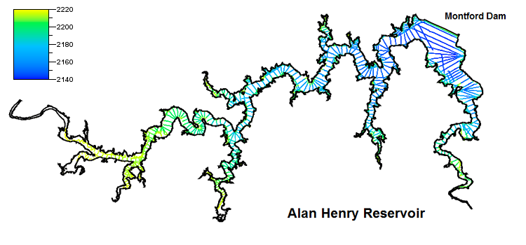

Using the Delaunay Triangulation
to Create a Reservoir Volume Model
Introduction
The previous article in this series described a technique for using the Delaunay Triangulation to estimate the volume of Lake Victoria in Africa (Lucas, 2018). In this article, I will extend that technique to an application that has more immediate and practical uses: estimating changes in the volume and surface area of a reservoir or public water supply based on observed changes in water level.
One notable characteristic of Lake Victoria, other than its enormous size, is that the lake volume and water level tend to remain the same from season to season and even from year to year. A public water supply is seldom so stable. Drought and consumer demand can result in substantial changes in the amount of water available in a lake or reservoir. When the managers of a public water supply need to assess the state of their resources, the primary indicator of water volume is the water level. So a model that can accurately estimate water volume based on the observed elevation of the shoreline or surface can provide valuable insight into trends, capacity, and the reservoir's ability to meet public needs.
Considering the importance of water resources, it is not surprising that there are sophisticated professional hydrographic models for estimating reservoir volume. This article will discuss the development of a more modest tool, a software application called the Simple Volumetric Model (SVM). As with other applications described in this series of articles, the purpose of SVM is not to compete with established software solutions, but to illustrate techniques for using the Delaunay Triangulation. Even so, I think that looking at the implementation of the SVM will provide a good introduction to some of the issues inherent in modeling the hydrography of a public water supply.
Note: The source code for the Simple Volumetric Model and supporting software packages is available at the Tinfour Software Project website. At this time, a Graphical User Interface (GUI) is not available, so the model must be run from the command-line (text interface). If there is sufficient user interest, a GUI will be developed for a future release of the Tinfour software.
Information on running the Simple Volumetric Model is provided in the sequel to this article Using the Simple Volumetric Model.
The Problem
Estimating the surface area for a body of water is straightforward. All we have to do is digitize the shoreline (accounting for islands, dams, inlets, and coves) and compute the area of the enclosing polygons. Estimating volume is a harder because it requires information about the depth (or bottom elevation) at a large number of locations across the body of water. Information about depth (bathymetry) is usually collected using a differential global positioning system (DGPS) coupled to a sonar-based fathometer to perform bottom-depth measurements, or soundings, at a large number of positions on the lake. Collecting bathymetry information is an expensive and time-consuming process. And most surveys are limited in how completely they can cover a lake. Even when not constrained by schedule and budget, survey vessels are restricted to navigable water. In areas where a boat cannot go, depth data is unavailable.
Let’s look at a real-world example. In 2017, the Texas Water Development Board's Hydrographic Survey Program (TWDB) conducted a detailed bathymetric survey of Alan Henry Reservoir, a body of water that serves the City of Lubbock, Texas (TWDB, 2017, p. 1). The TWDB does an extraordinary job of curating and publishing the information it collects in its surveys. The data posted on their website provides a valuable resource for researchers and was essential to the development of SVM.
Here is a view of the information from the 2017 survey (TWDB, 2019).
As the picture above illustrates, bathymetry data is collected along “track lines” of soundings that follow the path of a moving vessel. Along the track lines, soundings are spaced close together (SVM computed an average of 4.4 feet, or 1.34 meters, between points). But the spacing between track lines is much larger. Naturally, the spacing between track lines is a compromise between higher accuracy achieved through closer spacing and cost factors that limit how many lines can be collected. Over time, the TWDB has settled on a spacing of about 500 feet, or 150 meters (McEwen, p. 104).
What the Simple Volumetric Model Does
Many hydrographic models use some kind of interpolation and modeling technique to transform sample points into a regular grid of depth points. Because of their structural simplicity, grid representations of data are widely used in Geographic Information Systems (GIS) and geophysical models. In GIS applications, the term “raster” is used for grid data sets. Raster representations provide a convenient form for approximating surface area and volume for geophysical features.
The Simple Volumetric Model takes a different approach. It models the volume directly from the measured bottom elevations using a Delaunay mesh technique. The mesh connects neighboring points into a network of triangular facets describing the bottom of the lake. SVM computes the volume of the triangular column of water above each facet. The sum of these volumes gives the overall quantity of water in the lake or reservoir.
The old-school computer graphic shown below illustrates the basic difference between these two approaches. For this graphic, I wanted the data to appear in a form that most people are used to seeing. So I “flipped” the data upside down so that depth values are shown increasing upward. Also, the graphic is derived from notional data rather than an actual survey. But the picture does illustrate the concept and general nature of volume computations using a grid (on the left) and a Delaunay triangulation (on the right).
The Delaunay mesh approach has the appealing characteristic of representing a true volumetric solid, one for which the volume can be computed directly. The grid only approximates that volume. And because the raster approach requires the use of interpolation to populate the grid cells, it introduces an additional layer of processing, interpretation, and assumptions to the analysis of the bathymetry data. The triangle mesh approach, on the other hand, derives its results directly from the geometry of the input soundings. And with one fewer process in its analysis workflow, the mesh technique provides a more efficient treatment of the information in the source data.
That being said, I do not want to suggest that there is anything intrinsically wrong with raster representations of data. For the pictures above, I picked a very coarse grid. I did so to convey ideas, not to suggest a viable practice. If the grid cell size were made smaller, the computed volume would approach the same values as the triangular mesh computation. Geophysical analysts generally specify a raster cell size that is appropriate to the density and accuracy of the data collection. Broadly speaking, the cell size should be not more than half the size of the smallest feature of interest. For example, to ensure that the grid faithfully indicates the presence of a 20 meter depression in reservoir bottom, a cell size of 10 meters would be required. For the Alan Henry survey, the sample spacing along track lines averages 4.4 feet. Although the TWDB uses mesh-based techniques for their volume and surface-area computations, they do use raster techniques for other tasks including contouring and image production. For Alan Henry, the TWDB used a cell size of 1 feet by 1 feet (TWDB, 2018, p 10).
The Procedure
In addition to the bathymetry sample, the Simple Volumetric Model requires a specification for the boundaries of the water mass. Typically, this information is obtained from an industry-standard Shapefile that supplies polygons based on the geometry of the shoreline when the reservoir is filled to capacity. The model uses the enclosing polygons to restrict the analysis to the part of the triangle mesh that covers the body of water (see Lucas 2018,Why we need constraints.
As the reservoir volume declines, the shoreline elevation follows. The amount of water in the column above each triangular facet also decreases. Gradually, the reduced water volume uncovers triangular sections that would be submerged when the water level was high. Recognizing this behavior, we see that computing volume and surface area as a function of water level is just a matter of bookkeeping. All a mesh-based model needs to do is add up the contributions of submerged and partially submerged triangles and remove the dry triangles from the calculation.
The graphs below show the results from the Simple Volumetric Model using the TWDB data for Alan Henry Reservoir. The graphs plot water volume and surface area for water levels starting at about 2145 feet above mean sea level (MSL), where the reservoir is essentially empty. They extend to the conservation pool elevation of 2220 feet MSL, where the reservoir is essentially full.

Refining the Model
The official results from the TWDB provide a standard against which the results from the SVM can be compared. And it turns out that the initial volume estimate from SVM falls short of those given by the TWDB (TWDB, 2017, p. 2).
The table below shows the values from the respective models. It is not surprising that the SVM software does not perfectly match for the TWDB results. The SVM logic was implemented over the course of a few weeks. The TWDB system combines both commercial and custom software and is the result of years of research and development. However, the discrepancy in the results suggests that there may be opportunities for improving the SVM. Let’s consider the differences in the two results and see if we find out what those opportunities may be.
| SVM | TWDB | |
| Reservoir Volume (acre-feet) | 90,951 | 96,207 |
| Surface Area (acres) | 2,800 | 2,800 |
| Flat Triangle Area (acres) | 203 | N/A |
| Flat Triangle Count | 12,687 | N/A |
| Triangle Count | 403,229 | N/A |
| Run Time (seconds) | 4.42 | N/A |
The first step in improving the SVM results is to address the issue of “flat triangles.” As mentioned above, survey vessels can only collect bathymetry data in navigable waters. This restriction leads to a scarcity of data in shallow, near-shore regions of the reservoir. Near the boundaries of the reservoir, the Delaunay triangulation often forms triangles that consist solely of vertices contributed by the shoreline polygons. Since all of these vertices are set to the conservation-pool elevation, the resulting triangles are treated as having a depth of zero. These flat, near-shore triangles make no contribution to the estimated capacity of the reservoir. But when the reservoir is full, or nearly full, the areas corresponding to the flat triangles will be covered with water. And a calculation that does not account for the volume associated with the flat triangle areas may substantially underestimate the reservoir capacity.
The initial run of SVM found 203 acres of flat triangles, or nearly 7 percent of the total conservation pool area. Clearly, that is an unacceptably large portion of the reservoir to neglect in our calculations. So, to accurately assess the capacity of the reservoir, our model requires some means of adjusting for the flat triangles.
We can gain insight into ways to improve the flat-triangle features by looking at the geometry of the mesh in areas where they form. The figure below illustrates the layout of flat triangles for a the southeast section of the reservoir. The dark line in the middle of the section consists of samples collected by the survey vessel. The outline of the area is obtained from the digitized shoreline polygons.
There are two ways to remediate the flat-triangle features. First, if we can find sources of additional data in the near-shore area, we can use them to prevent some of the flat triangles from occurring. Second, we can modify the remaining flat triangles by inserting synthetic vertices with non-zero depth values into their structures.
For Alan Henry Reservoir, the TWDB was able to digitize supplementary depth data from aerial photographs taken when the water volume dropped to low levels in 2014 and 2017. By visually interpreting the position of the low-water shoreline during periods of reduced water volume, the TWDB was able to derive sets of supplemental bathymetry samples at 2202 and 2216 feet elevation. Adding those supplementary samples to the collection substantially reduces the overall area of flat triangles in the mesh.
| SVM (Original) | SVM (With Supplement) | |
| Reservoir Volume (acre-feet) | 90,951 | 91,528 |
| Flat Triangle Area (acres) | 203 | 70 |
| Flat Triangle Count | 12,687 |
Although the supplemental bathymetry points bring the SVM results closer to the 96,207 figure cited by the TWDB, they do not eliminate all the flat triangles. To remediate the remaining flat triangles, we turn to a triangle-modification approach. As noted above, the source data does not include information about the reservoir bottom within the areas that exhibit flat triangles. But the flat triangles do lie within the bounds of the shoreline polygons. And we know that they are covered with water to at least some small depth. Thus it seems reasonable to introduce artificial vertex points with non-zero depth values into the flat triangle features. These depth values can be obtained through interpolation between the shoreline vertex values and known data samples from the survey.
In developing the SVM, I experimented with a number of different approaches to interpolating values for the flat-triangle regions. In the end, I elected to use the structure of the Delaunay Triangulation itself as a way of expediting the interpolation process. The edge-iterator methods provided by the Tinfour library made it easy to identify cases where a flat triangle shared a common edge with a non-flat triangle. In such cases, the algorithm interpolates a depth value for the midpoint, M, of the common edge and inserts the vertex M into the triangulation as shown in the figure below.
The depth value for M is computed using a weighted average based on the distances S1 from the bathymetry point D to M and S2 from the shoreline vertex C to M. Inserting the new midpoint vertex into the triangulation replaces the flat triangle ABC with two non-flat triangles. It also has the benefit of slightly increasing the computed volume contribution for the area covered by the original triangle DBA.
The flat-triangle remediation technique is a multi-pass process in which non-zero depth values gradually diffuse into the near-shore area. Each iteration of the interpolation has a performance cost. So the flat-triangle remediation increases the overall runtime for the SVM software. The results are shown below. While the computed volume is still not a perfect match for the TWDB values, the interpolation did close the gap.
| SVM (with interpolation) | TWDB | |
| Reservoir Volume (acre-feet) | 91,749 | 96,207 |
| Surface Area (acres) | 2,800 | 2,800 |
| Flat Triangle Area (acres) | 0 | N/A |
| Flat Triangle Count | ||
| Triangle Count | 472679 | N/A |
| Run Time (seconds) | 7.99 | N/A |
An interpolation process such as the one used in SVM necessarily makes assumptions about how the bottom behaves. In applying a linear interpolation, SVM treats the bottom as if it transitioned from shore elevation to bottom elevations at a fixed rate, with a constant slope. In real-world scenarios, that is sometimes true. Sometimes, though, the bottom falls off quite steeply from the shore. And, in fact, one of the steepest drop offs in Alan Henry Reservoir is in the immediate vicinity of the Montford Dam. It is probably not an accident, then, that one of the track lines for the survey vessel closely parallels the dam itself. By collecting soundings along the edge of the dam, the TWDB’s survey improved the fit of the bathymetry data to the actual bottom in a region where the gradient was particularly steep.
The TWDB’s Improvements to Lake-Bottom Representations
While both the SVM and the TWDB models address the issue of flat triangles using interpolation, the Texas Water Development Board takes the modeling one step further by improving the treatment of deep-water areas. The TWDB developed an elegant technique that adds supplemental information to the bathymetry samples to reinforce bottom features that are not well-represented by the survey data. The figure below shows two views of the Alan Henry bathymetry. The panel on the left was rendered using just the soundings collected by the survey (data from file AH17_surveypts.shp). The panel on the right was rendered using the enhanced bathymetry data set created by the TWDB using their HydroTools software suite (data from file AH17_AEIDWpts_vol.shp).
The panel on the right reveals the presence of at least two submerged riverbeds on the lake bottom. Once you know that the relic rivers are there, it is easy to see signs of them in the unenhanced survey data in the left panel. In places where the track lines cross the riverbeds, the 4.4 foot (1.34 m) sample spacing is dense enough to capture the deep spots. But because the track lines are so far apart, the sounding data does not provide sufficient detail to connect the deep samples into a bathymetric structure. By itself, the soundings data set does not carry enough information to represent the riverbeds.
The HydroTools system addresses this shortcoming in a two part process. First, the TWDB digitizes the paths of the original rivers using old U.S. Geological Survey (USGS) quadrangle maps and aerial photographs taken before the construction of the Montford Dam in 1991. Next, this digitized information is used to support a directed interpolation process which supplements the original soundings with computed bottom elevation points placed in the vicinity of the relic rivers. It is these supplemental points that reveal the structure of the rivers in the figure above. They also contribute information about the deeper water along the submerged riverbeds to the overall volume calculation for the reservoir volume.
Here I must emphasize that the TWDB is not “inventing data”. The reason that the riverbeds show up so well in the figure is that the digitized paths add new information to the sample set. The TWDB could have accomplished the same effect by running a track line along the path of the submerged riverbeds, but the expense and technical challenges of doing so would have been prohibitive.
The figure below shows a close-up view of the bathymetry data augmented with points interpolated using the AEIDW technique that is described below. These points were introduced near the path of the riverbed to enrich the data set in the regions between track lines.
The AEIDW technique
The digitized riverbeds give information about the horizontal positions of the features, but do not include elevation (depth) data. All vertical coordinates for the supplemental bottom elevation points are interpolated from measured bathymetry. So you may wonder how the directed interpolation process used by the TWDB yields features that a conventional interpolation does not.
The HydroTools software interpolates supplemental data points using a technique called Anisotropic Elliptical Inverse Distance Weighting (AEIDW). AEIDW is an extension of the conventional IDW technique that is widely used in geophysical analysis (an excellent introduction to IDW is given at GIS Geography, 2018.
To get an intuition for the AEIDW technique, imagine yourself wading along a slow-moving river with steeply banked sides. The slope to your left and right will be quite a bit larger than the slope upstream or down. And, if you wanted to estimate the elevation of the riverbed where you stood, you might find that sample points taken 500 feet upstream and down were actually more relevant to your location than one taken 50 feet to your left. In an isotropic data set, distance-weighting factors are uniform in all directions. In an anisotropic data set, distance-weighting factors must be adjusted based on direction.
Merwade argued that because “river channels have anisotropic terrain” (p. 90), interpolations performed in the vicinity of rivers must consider the direction of the riverbed. The TWDB’s digitized river data provides the information required to establish directionality and select which samples are included in the interpolation of vertices along their paths. And, as we can see from the appearance of recognizable riverbeds in the figure above, that interpolation is sufficient to recover the structure of the bottom features and capture their contribution to the overall bottom estimate.
Using AEIDW data in SVM
While SVM does not implement AEIDW functions, it can take advantage of the AEIDW-enhanced data set provided by the TWDB. When SVM processed the augmented Alan Henry data with the optional flat-triangle remediation, the resulting volume estimate of 96,193 acre-ft was very close to the official value of 96,207. The figure below shows plots of SVM results for the AEIDW data and the computed reservoir volumes for Alan Henry Reservoir as a function of water-level elevation the TWDB’s official results for the lake (data from file AlanHenry_2005-07_r2016-11.txt). The fact that the SVM results so closely match those of the more sophisticated hydrographic tool gives evidence of the effectiveness of a volumetric computation based on the Delaunay Triangulation.
Conclusion and Acknowledgements
The Simple Volumetric Model demonstrates one of the many uses of the versatile Delaunay Triangulation. But it does have a suboptimal feature that is visible in many of the images in this article. Near the shore, the geometry of the boundary edges leads to a number of “skinny” triangles and fan-like structures in the mesh. In future work, I intend to investigate the use of Delaunay Refinement algorithms to adjust the structure of the mesh and produce more robust, uniform triangles. Fortunately, volumetric computations are not affected by skinny triangles. But for applications that involve movement or flow (storm surge prediction, sediment transport, oxygenation and nutrient diffusion, etc.), the geometry of skinny triangles can lead to degraded numerical computations.
To conclude this article, I’d like to thank the Texas Water Development Board for providing a valuable resource for public use. It is uncommon to find such a wealth of hydrographic information on the web. Their approach to the collection and dissemination of survey data is an example of the way information should be handled for all publically funded projects. I commend the TWDB Hydrographic Survey Program on a job done right.
References
GIS Geography (2018). Inverse Distance Weighting (IDW) Interpolation. Accessed May, 2019 from https://gisgeography.com/inverse-distance-weighting-idw-interpolation
Lucas, G. (2018). Using the Delauany to Compute Lake Volume – Part 1. Retrieved May, 2019 from https://gwlucastrig.github.io/TinfourDocs/HydrographyLakeVolume1/index.html
McEwen, T., Pothina, D., & Negusse, S. (2011). Improving efficiency and repeatability of lake volume estimates using Python. Proceedings of the 10th Python in Science Conference. (SCIPY 2011). Retrieved May, 2019 from http://conference.scipy.org/proceedings/scipy2011/pdfs/tyler_mcewen.pdf
Merwade, V., & Maidment, D. (2004), Geospatial Description of River Cannels in Three Dimensions (CRWR Online Report -04-08) University of Texas at Austin, Center for Research in Water Resources. Retrieved May, 2019 from https://repositories.lib.utexas.edu/handle/2152/6995.
Texas Water Development Board – Hydrographic Survey Program. (2018). Volumetric and Sedimentation Survey of Alan Henry Reservoir, August 2017 Survey. Austin, TX. Retrieved May, 2019 from http://www.twdb.texas.gov/hydro_survey/alanhenry/2017-08/AlanHenry2017_FinalReport.pdf
Texas Water Development Board – Hydrographic Survey Program. (2019). Completed Surveys & Data. Retrieved May, 2019 from http://www.twdb.texas.gov/surfacewater/surveys/completed/list/index.asp